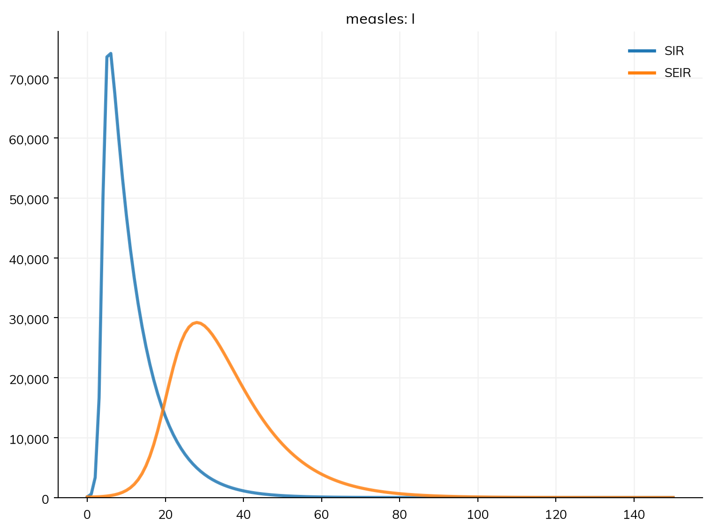
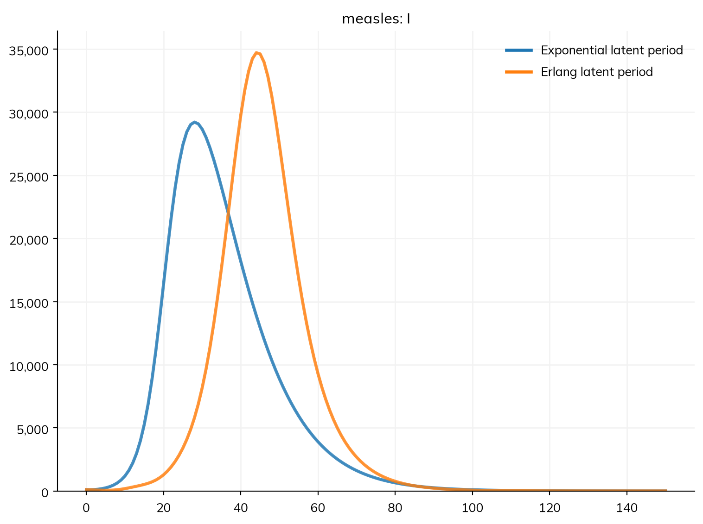
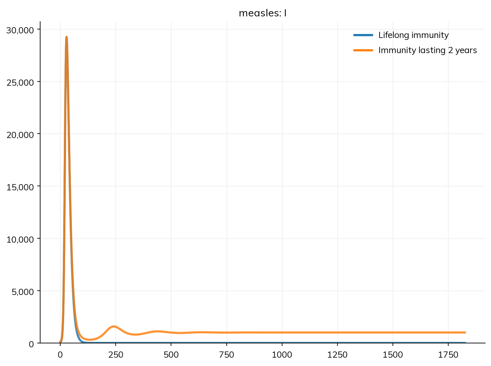

The SIR model of Tutorial 1 and Tutorial 2 leaves out much of what happens in a measles infection, and its outbreak is over within a few weeks, far faster than real measles. Tutorial 2 found that R0 and prior immunity decide how many people are infected. This tutorial asks the other half of the question: what decides how fast an outbreak spreads? It adds, one at a time, the pieces of structure that most models of infectious disease need, and compares the epidemic with and without each:
a latent period, in which people are infected but not yet infectious;
the distribution of the time people spend in a state, not just its average;
immunity that wanes;
a branch, where people in one state go one of two ways (here, a small share die).
It then names the parameters of the model, and checks the finished disease with describe(), its equations, and its diagram. By the end of this tutorial, you will be able to:
turn an SIR model into an SEIR model, and say why it changes the course of the epidemic but not R0;
choose the distribution of a duration;
add waning immunity and deaths;
name parameters, with a description and a range of plausible values;
check a disease from its description, equations, and diagram.
A latent period
After someone is infected with measles, there are about 10 days before they become infectious (and about two weeks before the rash appears). In an SEIR model, people in this latent period are in a compartment of their own, E (exposed): infected, but not yet infectious. Infection now moves people from S to E, and a new transition, progression, moves them from E to I after the latent period.
Here is the SIR model of Tutorial 2 next to the SEIR model, both run for 150 days. Each disease is named measles, so that the two runs’ results have the same names and can be plotted together:
import starsim as ss# The SIR model of Tutorials 1 and 2S, I, R = ss.states('S I R')infection = S >> I @1.9*I # β = 1.9 per dayrecovery = I >> R @ ss.days(8) # Infectious for 8 days on averagesir = ss.Disease(infection, recovery, init=dict(I=0.001), name='measles')# The SEIR model: infection leads to E, not IS, E, I, R = ss.states('S E I R')infection = S >> E @1.9*I # Infected by contact with infectious people, Iprogression = E >> I @ ss.days(10) # Infectious after a latent period of 10 days on averagerecovery = I >> R @ ss.days(8) # Recovered after 8 days on averageseir = ss.Disease(infection, progression, recovery, init=dict(I=0.001), name='measles')sir_sim = ss.Sim(sir, total_pop=100_000, stop=ss.days(150))seir_sim = ss.Sim(seir, total_pop=100_000, stop=ss.days(150))msim = ss.parallel({'SIR': sir_sim, 'SEIR': seir_sim})msim.plot('measles.I')
MultiSim: 2 runs of 2 scenarios (SIR, SEIR)
Done in 0.41 s

The rate of infection is still β times the share of people in I, not E, since people in E don’t transmit: a state is infectious only if it appears in the rate of infection. Both outbreaks start with 0.1% of people infectious (init=dict(I=0.001)). init_prev=0.001 would instead put them in E, where an infection leads, so that nobody would be infectious until the first of them had been through the latent period (Tutorial 2).
R0 is the same in both, 15.2, as the runs print: it depends on how many people each infectious person infects (β = 1.9 a day, for 8 days), not on how long it takes them to become infectious. But the outbreak is very different. With a latent period, the time from one infection to the next (the generation time) is about 18 days instead of 8, so the epidemic grows more slowly: it peaks on day 28 rather than day 6, and lower, with about 29,000 people infectious at once rather than 74,000. Almost everyone is still infected in the end, since that depends on R0. So the first answer to this tutorial’s question is the generation time: for the same R0, a longer generation time means a slower, flatter epidemic.
How long people stay in a state
A duration such as ss.days(10) is an average. By default, the time each person spends in the state is exponentially distributed with this average, as in the standard ODE model. An exponential distribution is a poor description of most latent periods, though: with an average of 10 days, it has 10% of people becoming infectious within a day, and 12% still not infectious after three weeks. The latent period of measles varies much less than this.
A duration can be given as any distribution instead. An Erlang distribution (a gamma distribution with a whole-number shape, k) is the usual choice in compartmental models. With k=10, the latent period has the same average, 10 days, and a standard deviation of about 3 days. Here it is, compared with the exponential latent period above:
progression = E >> I @ ss.erlang(k=10, mean=ss.days(10)) # 10 days on average; 95% between 5 and 17seir_erlang = ss.Disease(infection, progression, recovery, init=dict(I=0.001), name='measles')erlang_sim = ss.Sim(seir_erlang, total_pop=100_000, stop=ss.days(150))msim = ss.parallel({'Exponential latent period': seir_sim, 'Erlang latent period': erlang_sim})msim.plot('measles.I')
MultiSim: 2 runs of 2 scenarios (Exponential latent period, Erlang latent period)
Done in 0.37 s

The epidemic has the same R0 again, but grows more slowly still: it peaks about two weeks later, on day 44, and higher, with about 35,000 people infectious at once rather than 29,000. With an exponential latent period, the few people who become infectious within a day or two start new chains of infection early, and this speeds up the whole epidemic; with an Erlang one, almost nobody becomes infectious early, so growth is slower, but more of the town is infected at about the same time. So the distribution of a duration, not just its average, sets how fast an epidemic grows. This is worth knowing when a model is fitted to the early growth of an outbreak.
As an ODE, Starsim runs an Erlang distribution as k stages that people go through one after another, each exponential, with an average of 1/k of the whole. The stages are not separate conditions of the disease, only a way of giving the time spent in E a narrower distribution. The same can be written by saying how many stages to use: ss.Transition(E, I, dur=ss.days(10), stages=10) is the same model as E >> I @ ss.erlang(k=10, mean=ss.days(10)). equations() shows the stages, as E_1 to E_10:
As agents, each person draws their own time from the distribution instead. Other distributions, such as ss.lognorm_ex(mean=ss.days(10), std=ss.days(2)), are covered in Distributions. The rest of the tutorials keep to exponential durations, for simplicity.
Waning immunity
In the models so far, people who recover are immune for life, as they are after measles. For many other infections, such as pertussis, RSV, or cholera, immunity wanes: after some time, people become susceptible again. This is a transition from R back to S, which makes an SEIRS model. To see what it does, suppose (unlike real measles) that immunity lasted 2 years on average, and run both models for 5 years:
progression = E >> I @ ss.days(10) # Back to an exponential latent periodwaning = R >> S @ ss.years(2) # Susceptible again after 2 years on averageseirs = ss.Disease(infection, progression, recovery, waning, init=dict(I=0.001), name='measles')lifelong = ss.Sim(seir, total_pop=100_000, stop=ss.years(5), unit='day')waning_sim = ss.Sim(seirs, total_pop=100_000, stop=ss.years(5), unit='day')msim = ss.parallel({'Lifelong immunity': lifelong, 'Immunity lasting 2 years': waning_sim})msim.plot('measles.I')
MultiSim: 2 runs of 2 scenarios (Lifelong immunity, Immunity lasting 2 years)
Done in 1 s

The model now has durations in days and in years, so unit='day' says which unit the bare number β = 1.9 is in (Tutorial 2). The first outbreak is the same in both. With lifelong immunity, it is the only one: the town is left immune, and the disease dies out. With waning immunity, people return to S and new, smaller waves follow, which settle down to a steady level of about 1,000 people infectious at any time: the disease becomes endemic. A supply of new susceptible people, whether from waning immunity or from births (Tutorial 4), is what lets an infection persist in a population rather than burn out.
Deaths: a branch
Most people with measles recover, but a small share die, from complications such as pneumonia. How many varies widely between settings, from 1 in 1,000 cases or fewer in high-income countries to several in 100 in some low-income settings. Suppose it is 2 in 1,000 here. People leaving I then go one of two ways, a branch: 99.8% recover and 0.2% die. A branch is a transition with p=, the share of people that take it:
S, E, I, R = ss.states('S E I R')infection = S >> E @1.9*Iprogression = E >> I @ ss.days(10)recovery = ss.Transition(I, R, dur=ss.days(8), p=0.998) # 99.8% recover...death = ss.Transition(I, ss.null, dur=ss.days(8), p=0.002) # ...and 0.2% diemeasles = ss.Disease(infection, progression, recovery, death, init=dict(I=0.001))sim = ss.Sim(measles, total_pop=100_000, stop=ss.days(150))sim.run()print('Deaths:', round(sim.results.measles.death.sum()))
Sim: measles, 100,000 people, as an ODE, days 0 to 150
measles: R0 = 15.2, with 100 infectious at the start
Done in 0.0027 s; measles: 99,900 infections; at most 29,216 infectious, on day 28
Deaths: 200
ss.null is outside the model: people who die leave the population. Each branch has its own result, named after it (recovery and death), and could have its own duration (if, say, people who die did so sooner). Since almost everyone in the town is infected, about 0.2% of 100,000 people die; with so few deaths, the epidemic itself is all but unchanged. The equations show how a branch works: who goes which way is decided when people enter I, so I is in two parts, I_1 for those who will recover and I_2 for those who will die:
measles.equations()
dS/dt = -beta * S * I / N
dE/dt = beta * S * I / N - E / dur_E
dI_1/dt = p_recovery * E / dur_E - I_1 / dur_recovery
dI_2/dt = p_death * E / dur_E - I_2 / dur_death
dR/dt = I_1 / dur_recovery
A branch is not the only way for two transitions to leave one state. Two transitions out of a state with rates (or durations), and no p=, are competing risks: both act on everyone in the state, and whichever happens first moves them. Then the share that goes each way is set by the rates. A branch says the share directly, which is how the share of cases that die (the case fatality ratio) is usually known. Use whichever matches what you know about the disease.
The next tutorials leave deaths out, since they are few and change little else in this model.
Naming the parameters
Starsim names the parameters of a model itself (beta, dur_E, …), as Tutorial 2 showed. To name them yourself, and to say more about them, write them with ss.par(). Each takes its name from its variable, and can have a description (doc=), where its value comes from (source=), and bounds, the range of values it could plausibly take:
S, E, I, R = ss.states('S E I R')beta = ss.par(1.9, bounds=[1, 3], doc='Transmission rate per day')dur_latent = ss.par(ss.days(10), bounds=[ss.days(7), ss.days(14)], doc='Average latent period', source='Assumed for this tutorial')dur_infectious = ss.par(ss.days(8), doc='Average infectious period')infection = S >> E @ beta*Iprogression = E >> I @ dur_latentrecovery = ss.Transition(I, R, dur=dur_infectious, p=0.998)death = ss.Transition(I, ss.null, dur=dur_infectious, p=0.002)measles = ss.Disease(infection, progression, recovery, death, init=dict(I=0.001))sim = ss.Sim(measles, total_pop=100_000, stop=ss.days(150))
One parameter can be used in several places, as dur_infectious is here, and changing it changes it everywhere: ss.Sim(measles, pars=dict(dur_latent=ss.days(12)), ...) runs the model with a latent period of 12 days. The bounds are what calibration uses: sim.fit() searches for the values of every parameter with bounds that best match data. Parameters in the user guide has more, including priors.
Checking the disease
The disease now has four states and four transitions, and it is worth checking that it is the disease you meant before using it. There are three ways to look at it. describe() lists every state, transition, and parameter as Starsim has built it: which states are infectious (I, since it is in the rate of infection), the distribution of each duration, each parameter with its value, bounds, description, and source (beta = 1.9 per day, between 1 and 3), and every value that Starsim chose itself, marked as guessed:
sim.describe()
Sim 1 module, 100,000 people, days 0 to 150
solver
ode
guessed: every part of the model has a compartmental form
unit
day
from the typed values in the model
Disease 'measles' 4 states, 4 transitions
states
S, E, I, R
I infectious
init: I = 0.001; the rest in S
infection
S -> E transmission, from I
beta = 1.9 per day, between 1 and 3
Transmission rate per day
rate = 1.9 × I.n / N
homogeneous mixing
progression
E -> I spontaneous
time in E ~ exponential(mean = 10 days)
guessed: scalar duration
dur_latent = 10 days, between 7 and 14
Average latent period
source: Assumed for this tutorial
recovery
I -> R spontaneous
time in I ~ exponential(mean = 8 days)
guessed: scalar duration
p = 0.998
dur_infectious = 8 days
Average infectious period
death
I -> (removed) spontaneous
time in I ~ exponential(mean = 8 days)
guessed: scalar duration
p = 0.002
Mixing and interventions
mixing
homogeneous, 1 contact per day
guessed: no network given
Results and running
results
S, E, I, R, and one flow per transition
schedule
every day: measles
Notes
note
unit='day' (from the typed values in the model)
equations() prints the disease as the ODEs it stands for, with the names of the parameters. It is the quickest way to check that every flow leaves one state and enters another, and that the force of infection is what you meant:
measles.equations()
dS/dt = -beta * S * I / N
dE/dt = beta * S * I / N - E / dur_latent
dI_1/dt = p_recovery * E / dur_latent - I_1 / dur_infectious
dI_2/dt = p_death * E / dur_latent - I_2 / dur_infectious
dR/dt = I_1 / dur_infectious
diagram() draws the states and transitions as a flowchart, with the transmission dashed, the empty circle for ss.null, and each arrow labeled with its value and, for a branch, the share that takes it:
measles.diagram()
flowchart LR S(["S"]) E(["E"]) I(["I"]) R(["R"]) S -.->|"infection: 1.9 × I"| E E -->|"progression: 10 days"| I I -->|"recovery: 8 days, p = 0.998"| R I -->|"death: 8 days, p = 0.002"| null1(( ))
flowchart LR
S(["S"])
E(["E"])
I(["I"])
R(["R"])
S -.->|"infection: 1.9 × I"| E
E -->|"progression: 10 days"| I
I -->|"recovery: 8 days, p = 0.998"| R
I -->|"death: 8 days, p = 0.002"| null1(( ))
The diagram is written in Mermaid, a language for diagrams that JupyterLab, Quarto, GitHub, and many other tools draw; print(measles.diagram()) gives its text.
This disease is written as states and transitions, the way the rest of the tutorials write diseases. A disease can also be written as a class, with its states, parameters, and transitions in the class body; this is worth doing for a disease that will be used in several models, or shared with others, since then it can be made with different values of its parameters, like the diseases in Starsim’s library (e.g. Measles(beta=1.5)). Diseases in the user guide shows how, along with other kinds of transition, such as those triggered by an event. Tutorial 4 takes the SEIR model of this tutorial (without deaths) and splits the town into age groups.
Exercises
Measles has a latent period of 10 to 12 days. Using the model with named parameters, run it with a latent period of 12 days, using pars=. Does R0 change? How do the timing and height of the peak change?
Give the infectious period an Erlang distribution too, with k=4. Using R0() and a plot of I, check whether R0 or the course of the epidemic changes.
About 1 in 10 people with measles in this town are admitted to hospital, after 4 days of being infectious on average, and stay for 7 days. Add a state for people in hospital (assume they don’t transmit), and find the largest number of people in hospital at once.